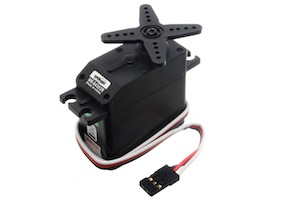
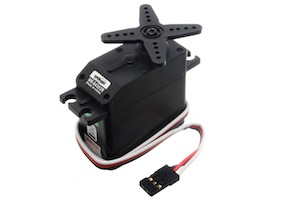

|  |
ServoSetPosition
1.0
Simple Arduino application to configure servo positions
|
|  |
ServoSetPosition
1.0
Simple Arduino application to configure servo positions
|
Arduino sketch to set initial servo calibration. More...
#include "Arduino.h"#include <Servo.h>Servo Set Position | |
Sets the calibration position of a standard 180 degree servo
Licensed under the Apache License, Version 2.0 (the License); you may not use this file except in compliance with the License. You may obtain a copy of the License at http://www.apache.org/licenses/LICENSE-2.0 Unless required by applicable law or agreed to in writing, software distributed under the License is distributed on an AS IS BASIS, WITHOUT WARRANTIES OR CONDITIONS OF ANY KIND, either express or implied. See the License for the specific language governing permissions and limitations under the License. | |
| #define | POSITION 6 |
| Position of the servo #description Use the following position settings: More... | |
| #define | SERVOPIN 8 |
| Set Arduino pin where you will connect the servo signal (usually White) wire. More... | |
| Servo | servo |
| void | setup () |
| void | loop () |
Arduino sketch to set initial servo calibration.
| #define POSITION 6 |
Position of the servo #description Use the following position settings:
PROTIP: If you are setting a large number of servos, I recommend connecting a servo extension wire to the Arduino so you can quickly connect and disconnect servos without rewiring three separate jumper wires.
0 = 0 Degrees (Minimum) 1 = 15 Degrees 2 = 30 Degrees 3 = 45 Degrees 4 = 60 Degrees 5 = 75 Degrees 6 = 90 Degrees (Center) 7 = 105 Degrees 8 = 120 Degrees 9 = 135 Degrees 10 = 150 Degrees 11 = 165 Degrees 12 = 180 Degrees (Maximum)
| #define SERVOPIN 8 |
Set Arduino pin where you will connect the servo signal (usually White) wire.
| void loop | ( | ) |
| void setup | ( | ) |
| Servo servo |
 1.8.3.1
1.8.3.1